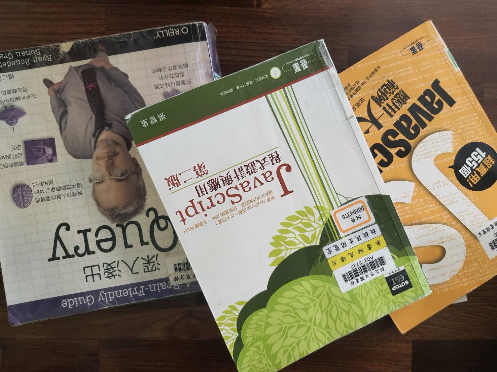
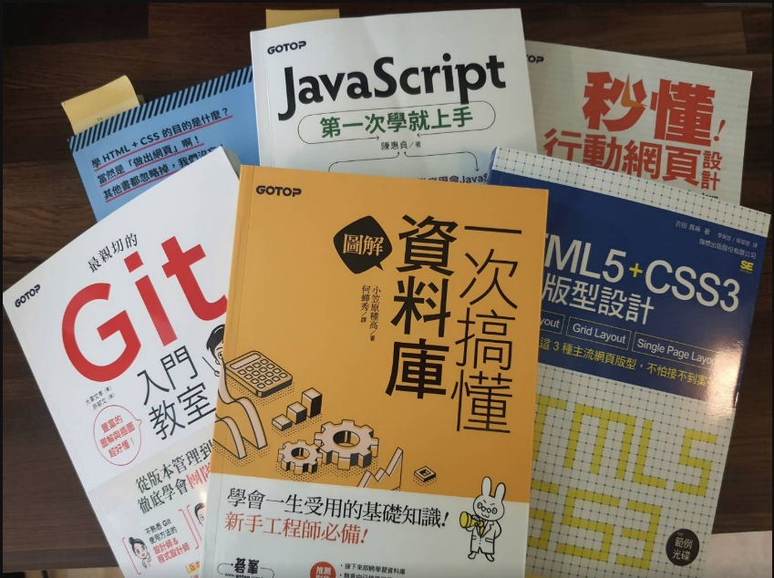

為什麼想成為前端、後端、或全端工程師？
由於在學期間為了賺取學費與生活費，兼了不少家教，且也對家教工作很有熱忱，因此畢業後也是一直在教育工作上努力著，但礙於少子化窘境，也思考到家教工作無法依循著生理年齡增長的體力限制，衡量著自己需要有第二專長來開闊人生道路。
會留意到前端工程師這個工作，則是近幾年的前端熱潮，時常在FB上看到相關課程廣告而留意到這個資訊，為了避免有跟風及衡量成敗風險，大約觀望半年的時間去了解"前端"這門學問，並且找尋到台北職訓有相關課程則給自己2.5個月的時間投入學習，藉此探索對程式的喜好度，受訓期間發現自己對於前端工程師的三大核心工具的使用越來越感興趣，也在每次解開疑惑或是完成小範例而有成就感，即使在結訓後，每日從起床到入睡前在電腦前的學習也感到樂此不疲，發現自己不會排斥程式且有探究的熱情，因此決定往前端工程師的目標前進。
為了成為軟體工程師，曾經做過什麼努力？
起初參加台北市職能發展學院110年上半年為期約3個月的跨平台網頁設計職訓課程，
對於前端的職務生態，包含什麼是UI、UX?、工作中使用到哪些工具(例如: figma )?以及前端工程師與前端設計師各自負責工作內容與技能樹等，有了粗略的了解，在這期間學習到很簡單的HTML與CSS，之後因為疫情改為線上上課模式，有更多彈性時間與空間則把職訓送的書籍(設計師一定要學的HTML5.CSS3網頁設計手冊)自行操作過一遍，讓自己對於標籤的使用有基礎印象。
結訓後，為了增加學習速度，購買了線上課程，每日至少完成3個單元任務，而在這課程中，為了完成TodoList專案，而學習到下列該語法:
- e.target
- addEventListener
- setAttribute()、getAttribute()、hasAttribute()、removeAttribute()
- data-XXX 自定義埋HTML結構資料
- if~else 、 if~else if 、 if~else
- forEach、map、some、every函式
- innerHTML、textContent、innerText
- localStorage、sessionStorage用法
- value取值
- classList(add、remove、toggle)
- createElement()、createTextNode()、appendChild()、insertBefore()、replaceChild()、removeChild()
- splice()、slice()、sort()
- createAttribute()、setAttributeNode()
- preventDefault()用法
由於線上課程缺少了for、while、function語法概念的講解，因此又到書店挑選適合符合自己程度的書，補足遺漏的觀念，且在過程中上網找尋該觀念的題目解題拆解，與友人討論寫法，了解是否真的懂得前述語法的涵義。
而在不斷學習過程中，也去查詢將來可能需要使用到的技能，例如:資料庫、Git等，也到書店中挑選好入門的圖解工具書學習及圖書館借閱前端技能的書籍。


目前的短期目標打算在12/27前考取一張JS國際證照，證明自己對JS有最基本的語法能力。
如果參與這個計畫，會怎麼安排學習時間？
現階段早上時間是網頁(HTML、CSS、SCSS、Boostrap輪流進行)，下午JS(書本基本語法範例練習、跟線上課程)，晚上持續JS(遇到電腦概論知識再去翻閱書籍或google)。
| 時間 | 事項 | 具體補充 |
|---|---|---|
| 09:30~12:00 | HTML/CSS/BootStrip的學習 HTTP 通訊協定 網站三層式架構 |
為了網頁UI的部分，除了熟悉基本的HTML之外，也力求於能使用BootoStrap快速建立頁面 故也透過youtube/wc3wchool 等教學網頁去學習。 |
| 13:00~18:00 | 基礎JavaScript學習 | 跟著線上課程學習Javascript的一系列基礎操作，並於實作範例程式於VsCode與CodePen上。 |
| 19:00~23:00 | 進階JS練習(AJAX/Fetech/API) |
|
如果參與這個計畫，預期會碰到什麼困難？你打算怎麼解決它？
目前的瓶頸在於無法架構出小專案，程式碼拼拼湊湊很零散，只能多看影片去感覺現役的前端開發者前輩的程式建構思維，自己再親自run一遍看是不是能以目前的實力"無中生有"建構出雛形，並找友人討論不斷地改進，再持續親自開發~~~一直loop下去，這是目前的解決方法!
預期在參與計畫這會是我主要的困難，還有一些基礎理論需要不斷透過實作累積經驗而内化，再翻閱相關書籍資料去填補不足!
是否有想要加入的軟體公司？為什麼想加入該公司？
群輝、微星、鴻海、玉山銀行，因為離家近，不想花費太多無謂的時間在通勤上，相對也能增進更多個人時間充實專業，除此之外比較傾向大公司，因工作任務分工細，職權與職責分明，福利制度會比較健全完善。
想要對我們說的事情？
謝謝彭彭提供模擬真實工作平台的訓練環境，相信不管受訓結果如何，在這個培訓過程中一定會學習到一般受訓平台上所學習不到的東西。